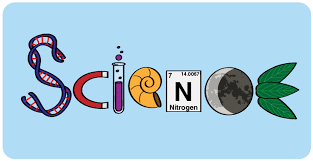

Science is the pursuit and application of knowledge and understanding of the natural and social world following a systematic methodology based on evidence. Scientific methodology includes the following: Objective observation: Measurement and data (possibly although not necessarily using mathematics as a tool) Evidence.
Science is the study of the natural world through observation and experiment. A scientific explanation uses observations and measurements to explain something we see in the natural world. Scientific explanations should match the evidence and be logical, or they should at least match as much of the evidence as possible.
It originally came from the Latin word scientia which meant knowledge, a knowing, expertness, or experience. By the late 14th century, science meant, in English, collective knowledge. But it has consistently carried the meaning of being a socially embedded activity: people seeking, systematising and sharing knowledge.
